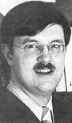
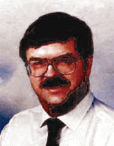

NASA

Oberg occupe un poste d'ingénieur spatial au Johnson Space Center de la NASA à
Houston depuis . Il est spécialisé dans les opérations de rendez-vous orbitaux avec la navette
spatiale (il est l'auteur de divers ouvrages et a reçu divers prix techniques concernant le sujet), et le programme
spatial russe.
Il est l'auteur de 10 ouvrages et d'un millier d'articles dans des magazines ou journaux sur l'ensemble des aspects
du vol spatial Oberg, J. E.: Red Star in Orbit - portrait de l'intérieur de l'histoire des activités spatiales
soviétiques en Oberg, J. E.: New Earths, premier traitement non-fictionnel du sujet éloigné de la "terraformation" ou de
l'"ingéniérie plantétaire" Oberg, J. E.: Pioneering Space (avec sa femme co-auteur), une vision large et éclairée de l'aspect humain
dans l'expérience du vol spatial Oberg, J. E.: The New Race for Space, décrivant le développement et les prospectives pour une coopération
rapprochée entre américains et russes dans le domaine du vol spatial Oberg, J. E.: Uncovering Soviet Disasters, une analyse du secret et des failles technologiques en
ex-URSS. Oberg, J. E.: Theory of Space Power, commandé par le Commandement Spatial US, décrivant comme les
États-Unis ont acquis une supériorité spatiale et comme ils peuvent l'exploiter et la maintenir pour le siècle
prochain.. Il participe à de nombreuses autres publications et est consultant pour des clients privés
(chaînes de télévision) ou public comme le Congrès américain.
Ufologie

Membre du CSICOP, Oberg porte un regard critique sur nombre de prétentions
extraordinaires liées aux ovnis, en particulier dans l'espace Oberg, J. E.: "The Failure of the 'Science' of Ufology", New Scientist, 1979-10-11 Critiqué par Ronald
Westrum. Oberg, J. E.: Ufos and outer space mysteries: a sympathetic skeptic's report, Norfolk, Virginie, Donning
Co., 1982 Oberg, J. E.: "The Great Soviet UFO Coverup", MUFON
UFO Journal, 1982-10 Oberg, J. E.: "The Black Box Approach To UFO
Perceptions", The Fourteenth International Conference on the Unity of the Sciences Houston, Texas, 28
novembre/1985-12-01 - Discussion de l'article de Bruce Maccabee "UFOs: Fantasy or Present Reality?" Oberg, J. E.: "Case Studies In Pilot
Misperceptions Of "UFOs", Paranet, 1994-05-15 Oberg, J. E.: "UFO
Update", Omni, 1981-07.
Oberg commenta l'observation de son collègue astronaute James MacDivitt, en indiquant
qu'il s'agissait du 2ème étage de la fusée Titan qui venait de mettre Gemini 4 en orbite. Timothy Good fit remarquer dans un livre paru en : Si tel est le cas,
la seule chose demeurant inexplicable est qu'apparemment McDivitt ait été incapable de reconnaître sa propre fusée
!
.
Oberg a notamment défendu la thèse officielle de la NASA sur l'affaire de la video de STS-48.